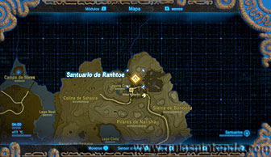
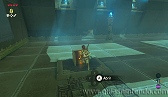
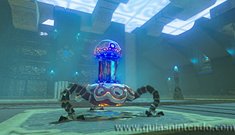
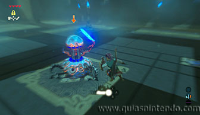
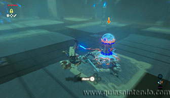
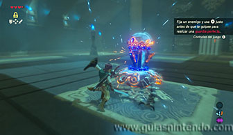
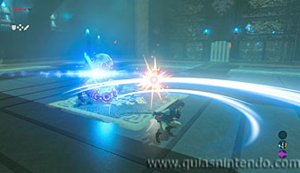
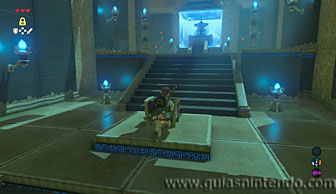

Puedes acceder a este santuario desde que llegas a la región de la torre de Picos Gemelos. Está dentro de la Aldea de Kakariko, subiendo una cuesta que hay al lado derecho de la casa de Impa.

Puedes conseguir tres cofres, uno está antes de llegar al altar (contiene un trozo de Ópalo), pero los dos primeros los puedes abrir nada más entrar en el santuario (contienen una Espada del Vigilante y un Escudo del vigilante). Cuando los hayas abierto ve hacia el centro de la sala y aparecerá un enemigo, un miniguardián 2.0. El objetivo de este santuario es aprender a luchar.

El primer reto es aprender a esquivar los ataques y contraatacar enseguida (cuando el tiempo se ralentiza). Para ello tienes que fijar el blanco y saltar hacia un lado justo cuando el enemigo te vaya a atacar. Si el tiempo se ralentiza, podrás contraatacar pulsando el botón Y.

Después tendrás que esquivar saltando de espaldas y contraatacar. Es un movimiento muy parecido al anterior, pero debes presionar la palanca de control hacia atrás en vez de hacia un lado.

Ahora tendrás que desviar el ataque del enemigo, para ello cúbrete con el escudo y pulsa el botón A justo en el momento de su ataque. Así conseguirás apartarlo a la vez que le dejas descubierto y puedes atacar.

Por último, tendrás que usar el giro con tu arma. Deja el botón Y apretado unos segundos y realizarás el ataque al soltarlo. Si te golpean mientras lo preparas perderás la energía acumulada, así que no pongas muy cerca de él hasta que vayas a ejecutar el movimiento de ataque.

Así terminará el entrenamiento, ahora tendrás el camino abierto para llegar al altar. Antes de dirigirte a él podrás coger la espada del enemigo, la Espada de guardián y también algunos materiales. En las escaleras de subida encuentras el tercer cofre que puedes abrir en este santuario. Después examina el altar para obtener un símbolo de valía.
